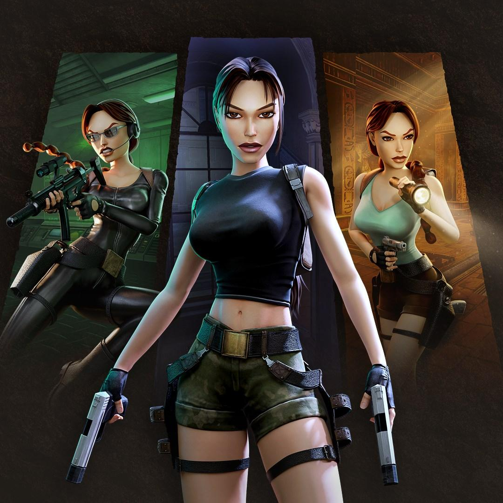
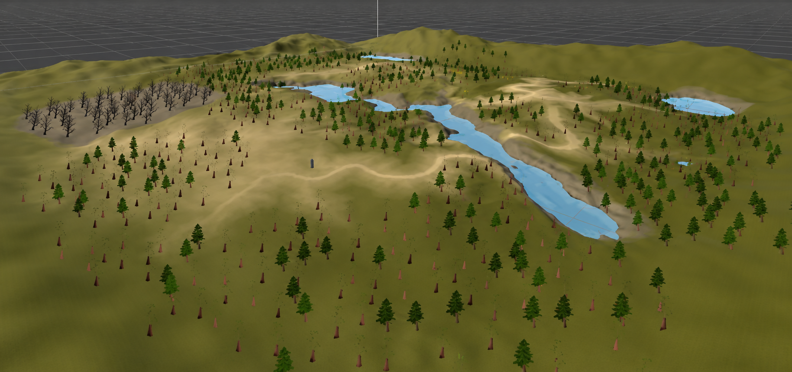

Estudios LGBTIQ+ Comunicación y Cultura. Published (2026).
This paper explores how female protagonists in games like Tomb Raider, Dead or Alive, and Bayonetta are often presented as empowered, yet still shaped by hypersexualised design and the male gaze. It examines how gameplay, camera systems, and character design work together to create a tension between empowerment and objectification. While these characters appear progressive, their representation operates within an “aestheticised pleasure” framework, where visual and interactive elements continue to reinforce gendered expectations. At the same time, player interaction opens space for alternative and queer interpretations. The study uses close analysis of gameplay, animation, mechanics, and promotional material, applying feminist and queer theory (Mulvey, Butler, Crenshaw, hooks) to a game-specific context. This research highlights how video games uniquely shape gender representation through player participation, showing that interactivity can both reinforce and challenge traditional norms in ways that differ from film and other media.
View Publication

Press Start. Under Peer Review.
This paper explores how procedural content generation (PCG) reshapes authorship in games by redistributing creative agency between designers, systems, and players. It examines how algorithms, rules, and constraints influence the creation of game experiences and how these structures carry aesthetic and political values. Combining the Mechanics–Dynamics–Aesthetics (MDA) framework, authorship theory, algorithmic media theory, and practice-based research, the study analyses three approaches to procedural authorship through case studies of Spelunky, Minecraft, and No Man’s Sky. A Unity prototype was developed to explore designer-led, system-led, and player-led procedural generation modes. The research argues that PCG does not remove authorship but redistributes it, positioning designers as “possibility engineers” who shape the rules, affordances, and values embedded within procedural systems.